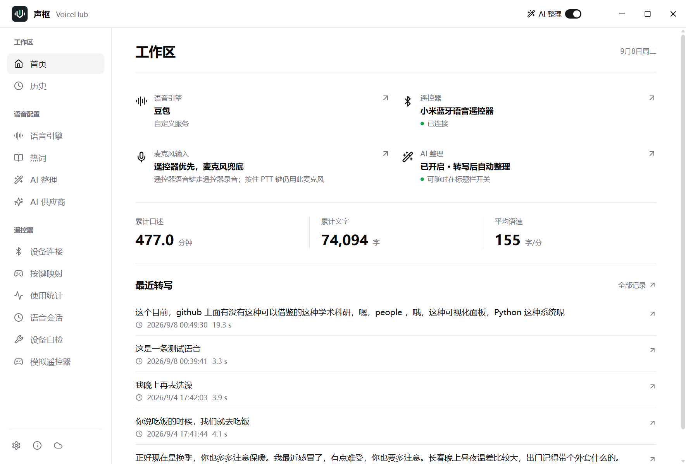
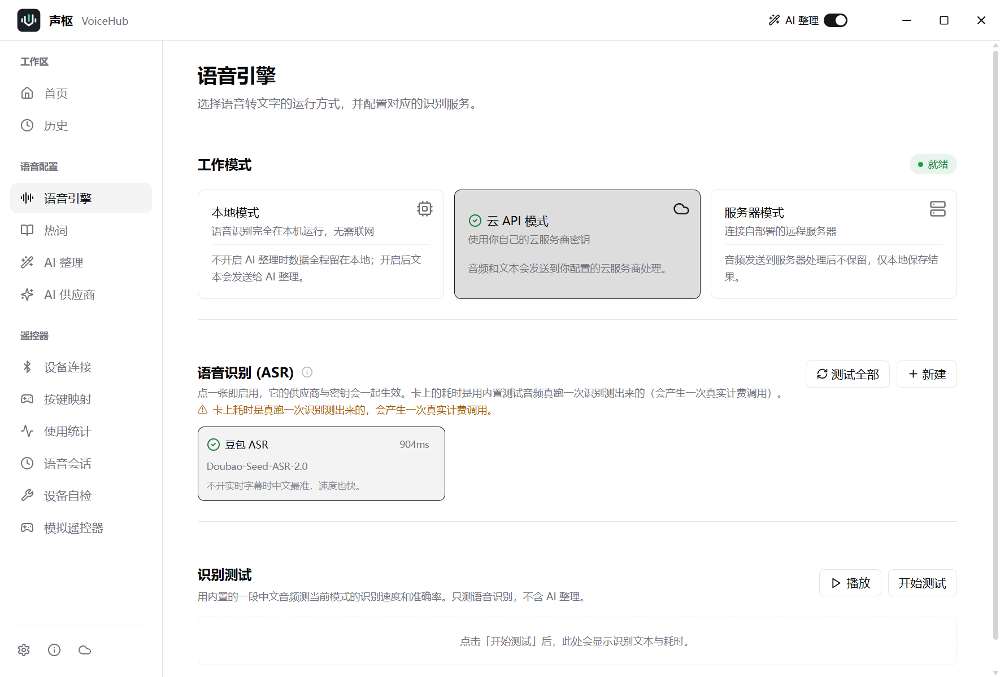
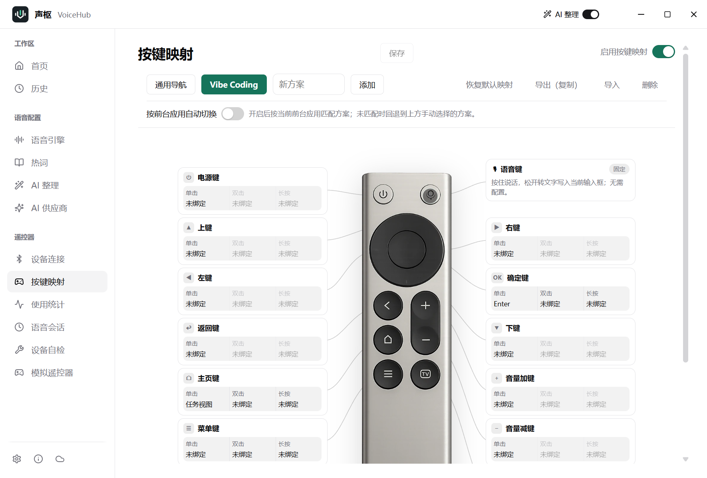
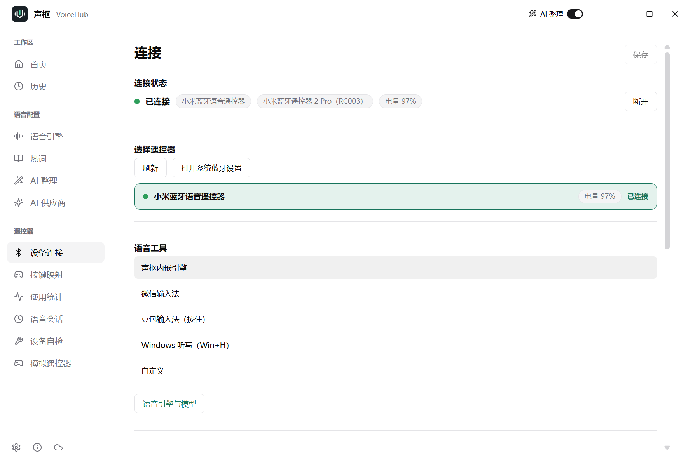

把小米蓝牙遥控器变成 Windows 无线麦克风与语音遥控器
遥控器语音键 → 蓝牙音频直连 → 本地 / 云端识别 → 文字进入当前输入框
遥控器音频经蓝牙直传内置识别引擎，无需独立语音软件，也无需虚拟声卡。支持本地 GGUF 模型、OpenAI 兼容服务与多家云端供应商。
录音键默认按住说话（蓝牙直传）；切换免提后按一下开始、再按结束，经系统麦克风收音。长录音超过固件 60 秒上限自动断点续接，识别不断。
12 键位单击 / 双击 / 长按三槽动作，改动即时生效；内置删除整行等编辑动作，按键统计、语音历史与链路自检一应俱全。
转写结果可经 AI 润色整理后填入输入框，支持自定义指令、热词与替换规则，标题栏一键开关。



